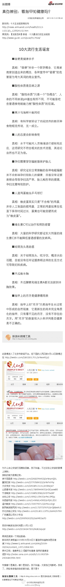
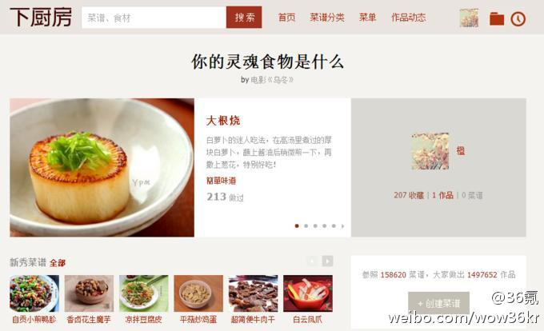
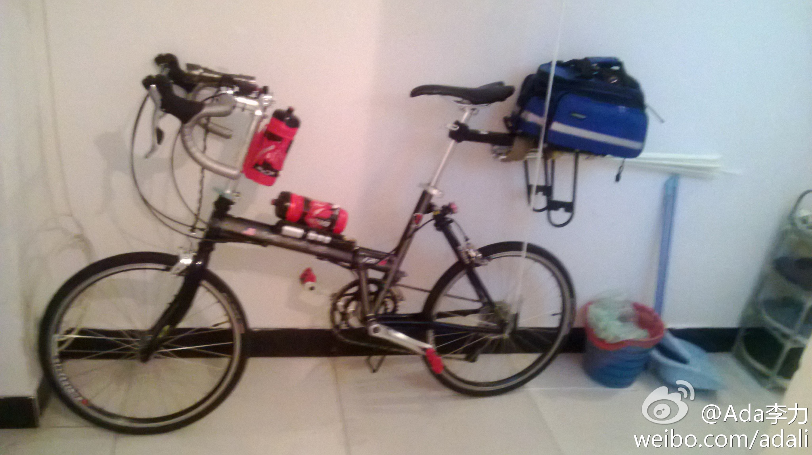
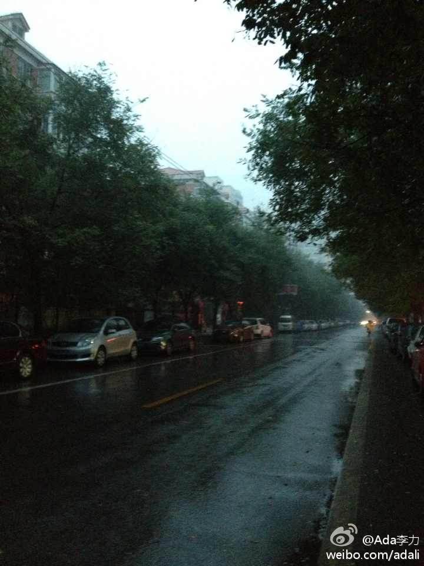
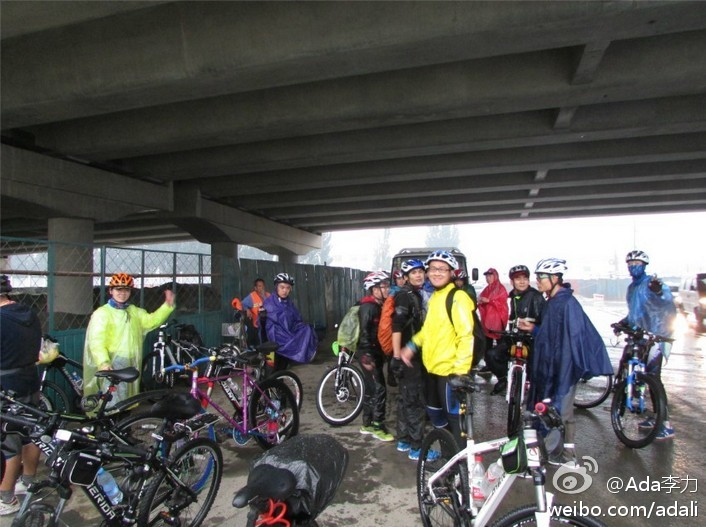
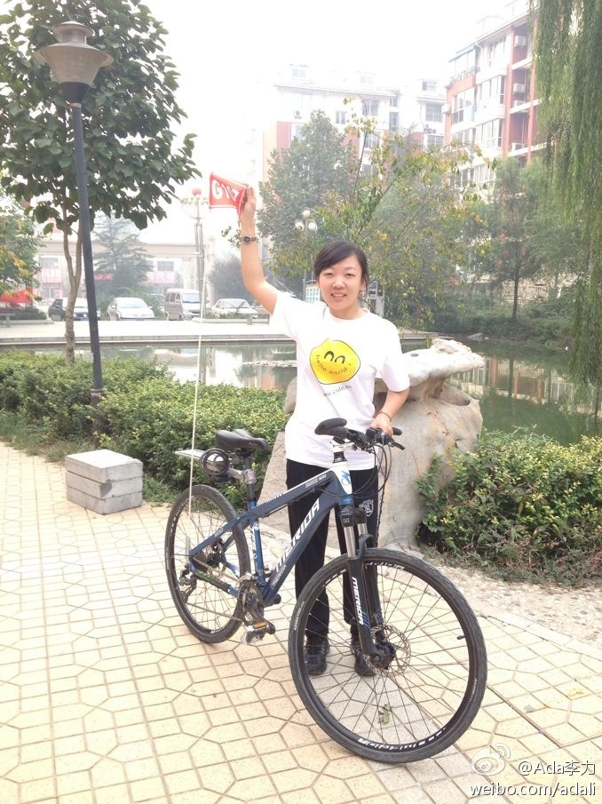
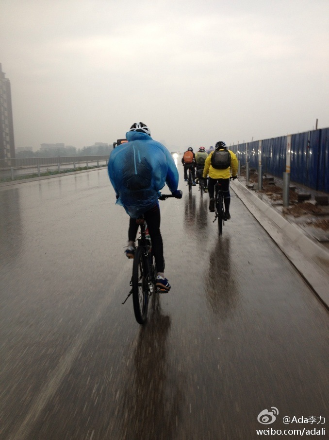
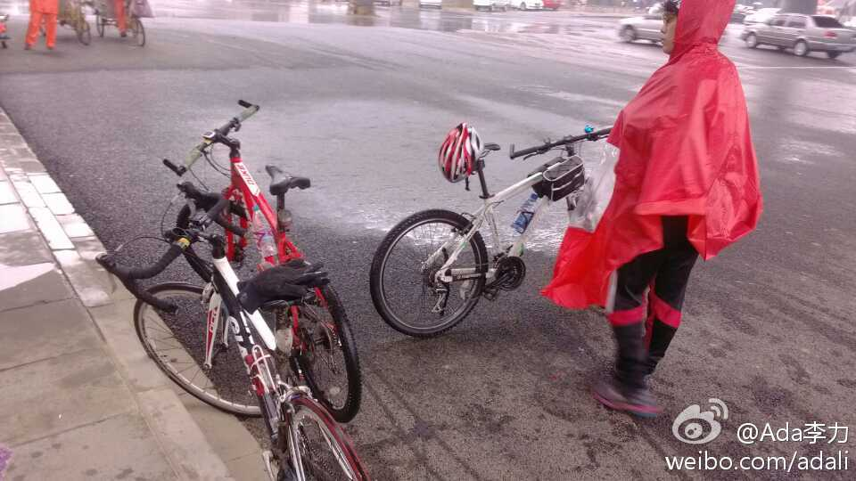
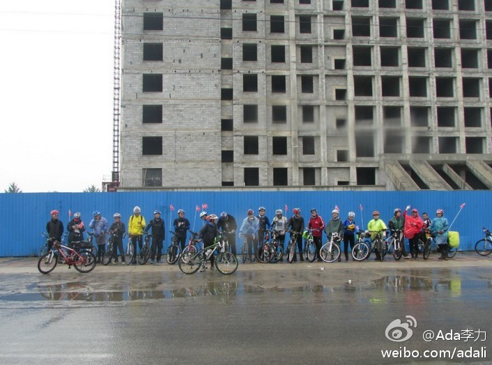

人民日报小编的水平不高，出这样的文章很正常。@付亮的竞争情报应用:真伪辨别：看指甲知健康吗？真伪辨别：看指甲知健康吗？ 新华网《十大生活谣言榜发布》中有一条不实流言“指甲上月牙是健康“晴雨表””，而4月12日人民日报等官方微博发布了“看指甲知健康：月牙消失该休息了”，最近的到了10月10日的郑州晚报官微。究竟哪个是真的，哪个是假的，我不知道，大家自己判断吧。 
#社区运营#之UGC//@36氪:后来在分享经验时，Tony会说，每一个细节都不要平庸，每想一句文案都考虑：它是否足够有传播点？是否让人们觉得意想不到，原来还可以这样做？——就是这样，在朋友们的吆喝，和微博、豆瓣的传播下，下厨房首日上线迎来三万的独立访客，算是一个不错的成绩。@36氪:听下厨房创始人Tony聊聊UGC美食社区的故事：从冷启动到探寻盈利 | 每一个做UGC型社区的人都不免有过疑惑：鸡、蛋相生，何者先得？如何凭最初的内容斩获用户，再促使涌入的用户生成更多内容，最终形成内容源源不断产生的圆满闭环？下厨房也曾有此一惑，他们如何应对？听下厨房创始人Tony聊聊UGC美食社区的故事：从冷启动到探寻盈利 by @苑伶伶伶 
谢。//@bbbush: LastPass 很好用，每个网站都 Generate 不同的密码，之后自动填充，自动登陆……我搭配 YubiKey 来用，LastPass 本身设置成比较高的安全级。当然网银的密码还是不敢往里放。搭配 Google Authenticator 也可以@Ada李力:很多人的习惯是一套密码用在所有网站上，这样做当然有风险。但我现在遇到的风险是，注册的新帐号没有使用之前熟悉的密码，更要命的是没有记录下密码。申请找回密码，还被客服给拒绝了。结果这个帐号就作废了。
【迟到的作业：记十一风雨骑行回家之路。】今年早早的计划好了十月一骑车回家，还特意跟CSDN申请了T恤的赞助，跟朋友借来了几个手台，做了车队的小红旗，可以说是万事俱备。无奈长发当天天公不作美，从早上5点多就开始下雨，... 网页链接 
CSDN中的“健身养生”论坛，版主还是@蒋涛CSDN 呢，不过很久没履行版主责任了。 现在版里有了新鲜血液。@Ada李力:【迟到的作业：记十一风雨骑行回家之路。】今年早早的计划好了十月一骑车回家，还特意跟CSDN申请了T恤的赞助，跟朋友借来了几个手台，做了车队的小红旗，可以说是万事俱备。无奈长发当天天公不作美，从早上5点多就开始下雨，... 网页链接
我曾经在运营和技术之间徘徊过，总觉得转做运营而丢了做过十多年的技术有些可惜。这两天装了Discuz看了看后台，社区基本要用的工具，Discuz都给做全了，如果只是把Discuz的功能自己再写一遍的技术，不做也罢，倒是#社区运营#更有意思更有前景。
以前的技术背景会让运营效率高些，但思维和方法的转变更难些。[呵呵]//@ACOUG中国：其实一点都没有丢，反倒可能结合的更好。我之前做技术，现在做运营，博客后台要搞、邮件EDM也要搞，神马Maillist、Google Analytics、调查文件更是不在话下。这些正是做技术时积累的。ps.Ada毕竟是Java方面的专家，@Ada李力:我曾经在运营和技术之间徘徊过，总觉得转做运营而丢了做过十多年的技术有些可惜。这两天装了Discuz看了看后台，社区基本要用的工具，Discuz都给做全了，如果只是把Discuz的功能自己再写一遍的技术，不做也罢，倒是#社区运营#更有意思更有前景。
 真伪辨别：看指甲知健康吗？ 新华网《十大生活谣言榜发布》中有一条不实流言“指甲上月牙是健康“晴雨表””，而4月12日人民日报等官方微博发布了“看指甲知健康：月牙消失该休息了”，最近的到了10月10日的郑州晚报官微。究竟哪个是真的，哪个是假的，我不知道，大家自己判断吧。
真伪辨别：看指甲知健康吗？ 新华网《十大生活谣言榜发布》中有一条不实流言“指甲上月牙是健康“晴雨表””，而4月12日人民日报等官方微博发布了“看指甲知健康：月牙消失该休息了”，最近的到了10月10日的郑州晚报官微。究竟哪个是真的，哪个是假的，我不知道，大家自己判断吧。